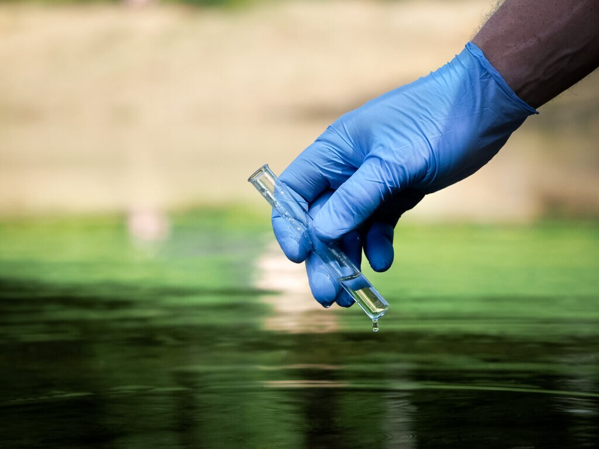

Water Quality Testing
Water quality testing is essential for ensuring that water is safe for consumption and environmental use. It involves analyzing water samples to detect contaminants and pollutants. Key parameters tested include physical aspects like temperature and turbidity, chemical factors such as pH, dissolved oxygen, and heavy metals, and biological elements like bacteria and algae. Testing methods vary from field kits for immediate results to detailed laboratory analysis for comprehensive data. Online monitoring systems provide real-time data for continuous assessment. Regulations set by bodies like the EPA and WHO guide testing procedures and standards. Proper testing helps safeguard public health, comply with environmental regulations, and maintain the quality of drinking water and aquatic ecosystems.
Water Treatment
Water treatment is the process of improving water quality to make it safe for consumption and use. It involves several stages to remove contaminants and impurities. Coagulation and flocculation are initial steps where chemicals are added to clump together particles for easier removal. Sedimentation follows, allowing particles to settle at the bottom of a tank. Filtration then removes remaining solids through various media, such as sand or charcoal. Disinfection is applied using chlorine, ozone, or ultraviolet (UV) light to kill harmful microorganisms. In some cases, advanced treatments like reverse osmosis or activated carbon may be used for additional purification. The treated water is then tested to ensure it meets safety standards before distribution. Effective water treatment protects public health, supports environmental sustainability, and ensures a reliable supply of clean water.

Public Awareness Programs
Public awareness programs for water pollution aim to educate and engage communities in protecting water resources. These programs often include educational campaigns using media, workshops, and school curricula to inform people about the causes and effects of water pollution. Community events such as clean-up drives and tree planting help involve local residents in practical actions. Partnerships with local organizations and governments enhance outreach and support for sustainable practices. Information dissemination through brochures, social media, and public service announcements raises awareness of safe waste disposal and conservation techniques. Additionally, advocacy efforts promote policy changes and support environmental regulations. By fostering a deeper understanding and encouraging active participation, these programs play a crucial role in reducing pollution and preserving water quality.
Cleanup Projects
Water cleanup projects are vital for removing pollutants and restoring aquatic ecosystems. River and lake cleanups involve volunteers collecting trash and debris from water surfaces and banks. Beach cleanups focus on removing plastics and other waste from coastal areas, often paired with educational campaigns. Wetland restoration includes planting native vegetation and controlling invasive species to improve water quality and provide wildlife habitat. Storm drain maintenance ensures debris is removed before it reaches larger water bodies, often using trash capture devices. Chemical spill responses involve specialized teams managing and mitigating spills with containment and cleanup technologies. Successful projects rely on community engagement, partnerships, education, and ongoing monitoring to track effectiveness and promote sustainable practices.